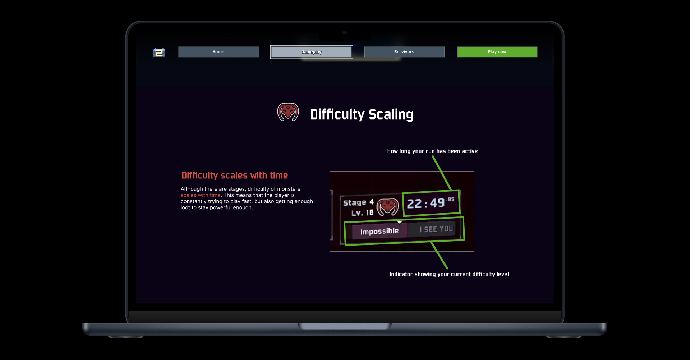
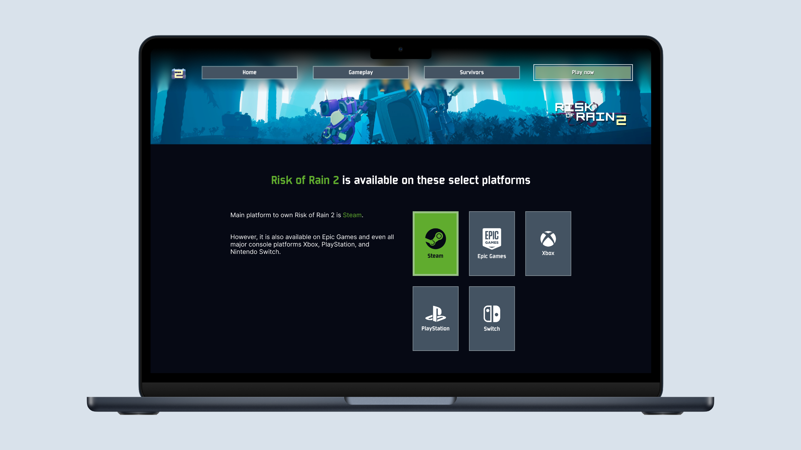
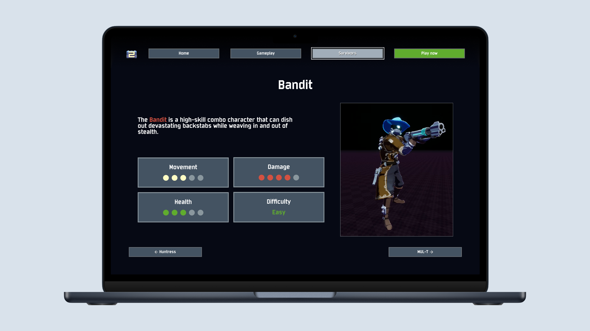

Risk of Rain 2
Risk of Rain 2 Concept Website
Role
User Interface Designer
Tools
Figma
Deliverables
Project Proposal
Prototype
Duration
12 Days

Overview
I was tasked with creating a prototype website based on Risk of Rain 2, focusing on building a clear
and engaging experience for users through strong design principles. The goal was to design an interface
that
feels natural to explore, visually consistent, and easy to understand. Every layout and interaction was
planned to guide users smoothly through the content, helping them stay focused and interested while
maintaining organization, highlighting essential information and maximizing memorization of information.
Project goals
Frictionless
A key goal of this project was to design an experience that feels
natural and
effortless to navigate. I aimed to remove unnecessary friction so users could move smoothly through the
interface with confidence and ease.
Unforgettable
Another goal was to create a memorable and engaging experience. I
focused on
presenting information clearly and visually, making it easy for users to stay interested and retain what
they learned.
Consistent
Consistency was an essential goal throughout the design process.
I
wanted
every
element to feel unified and reliable, ensuring a cohesive experience across the entire prototype.
Process
Project Proposal
I started by creating a project proposal that outlined how I would apply key
UI
design
principles in my final project. The proposal details how each principle would guide my design choices.
Check
the link below to view my full write up.
User Interface Principles
The Multimedia Principle
The Multimedia Principle tells us that users learn better through pictures
and
words
rather than words alone. I will make use of this principle by showcasing pictures of the
game along with text that explains the image further on all pages.

The Von Restorff Effect
The Von Restorff Effect is a psychological principle that states when three or
more similar
objects are present, the one that is different from the rest is likely to be the one that's
remembered. I will consider this by bolding, and highlighting key text in bodies of
information with appropriate colors that stand out.

The Zeigarnik Effect
The Zeigarnik Effect is a principle that states that people tend to remember
incomplete
tasks better than completed tasks. I will consider this principle by making the userʼs last
step to go to the store fronts to purchase the game. This is so the user will remember they
have not purchased the game yet.

Final Prototype
The final prototype successfully demonstrates an interface that is both
intuitive
and engaging. By applying thoughtful UI and UX principles, the design provides a seamless experience where
users can easily navigate, explore content, and understand key aspects of Risk of Rain 2. The layout
captures
the game’s atmosphere while presenting information clearly, achieving the goal of creating an immersive and
accessible resource for players.


{kind=link}
Takeaways
I learned extremely valuable insights during this project. It’s very
important to stick to widely accepted design conventions for the most part when creating interfaces. I
learned
that there is so much more that goes into User Interface Design than I originally thought. I will be able to
apply these design principles to all future projects going forward.